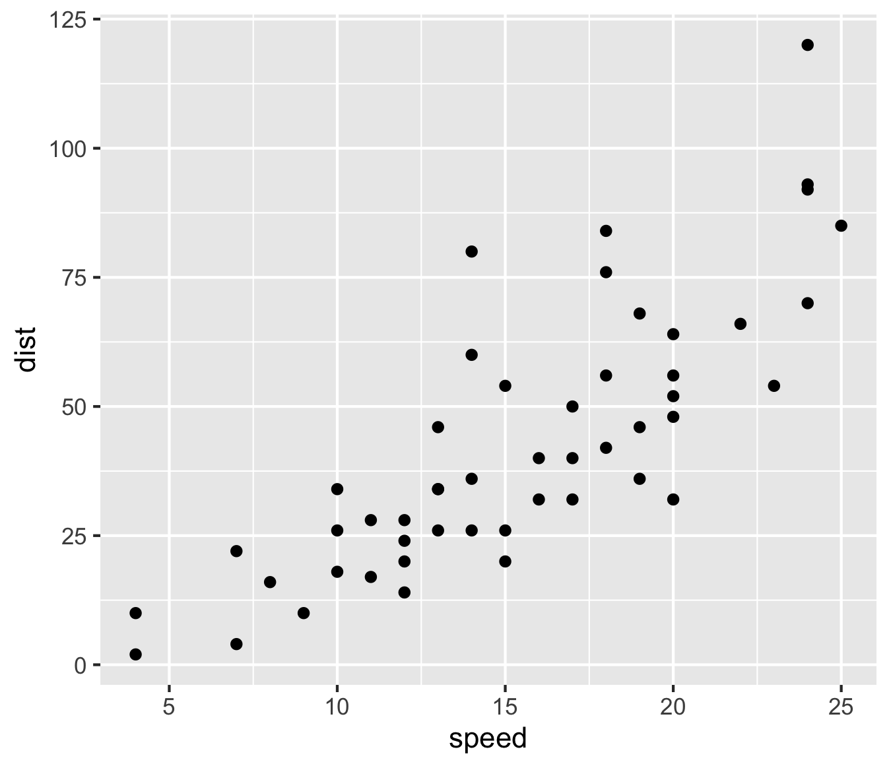
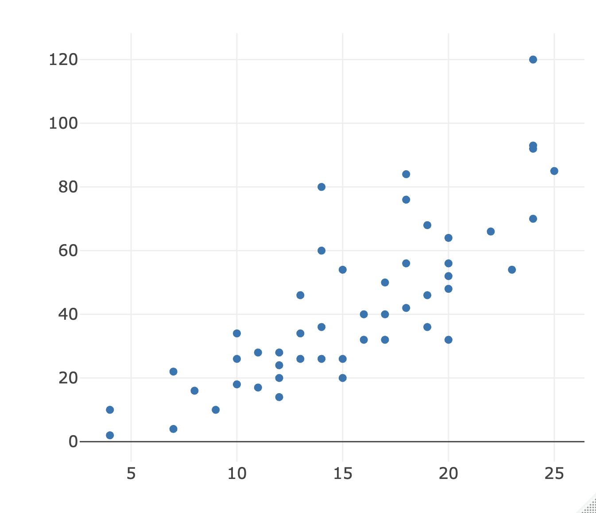

Visualizations and Storytelling
Nov 10., 2025 posted by N.K.Pizano
Plots and Figures in R
In this week's post, I review three essential R tools for creating effective data visualizations: base R plotting, ggplot2, and Plotly. Each offers unique strengths—from quick exploratory charts in base R, to highly customizable layered graphics in ggplot2 and interactive plots with Plotly. Also, I provide resources on designing inclusive and accessible visualizations, ensuring that data stories can be understood and engaged with by diverse audiences. Ultimately, the goal is not just to make attractive plots, but to use visualization as a powerful form of storytelling. Plots should help reveal patterns, clarify insights, and communicate findings with clarity and care. Remember, data are derived from someone or something, including humans, animals, and other worldly phenomena.
R code for plotting
- Plot in Base R
By default, plot() using base R (no need to load package) will produce a scatter plot.
This function, is great if you need to quickly visually explore
the relation between variables or to create a "historgram-like" plot for a single variable.
Start the argument by stating the variable or variables you like to plot plot(x,y).
Building on or customizing the scatter plot is really easy. You can add arguments like type =, lwd =, col =. Where
type = will let you costumize appearance of data points. For example, plot(x,y, type = "l") will display
the relation between both variables using a continuous line. Check the link above for other arguements to specify
with type = . Change the width of lines using lwd = and use col = to change the color of those points.
Check out the basic graph I created using the following line of code:
plot(cars$speed, cars$dist, type = "b", lwd =3, col = "red", main = "Plotting Distances and Speed Using the cars Data Set", xlab = " Car Speed", ylab = "Stopping Distance")

- ggplot
There are many resources that you can help you build plots using GGplot2 from
cheatsheets to bookdowns, which can get you started or create highly customizable
figures. I often refer to ggplot as my plot decorator because every argument or function
you add onto ggplots give an added visual effect. I <3 GGplots, it genuinely
brings me joy! Here are the basic arguments to build your first plot. Start by calling
on the ggplot() function and listing the data frame in the parenthese. Within the same
function use the aes() argument, which will then help with "aesthetically" mapping on one or more
variables onto a plot. In other words, you are telling ggplot which two variables you would
like to plot. You can refer to those variables by using x = and y = or just listing
them and separating variables using a comma. Try this ggplot(cars, aes(x = speed, y = distance)). To add the actual points
Now that you have the base of your plot ready, you can add on those points by literally
adding a plus symbol (+) to the end of the function followed by geom_point().

You can customize the shape, size, and color of those points. Beyond that you can creat histogram, qq-plots, and so much more. Check out this cheatsheet that I refer to all the time Click Here. - Plotly library
Want to create an interactive plot for fun or a presentation? Plotly, like
ggplot is highly customizable. I recently used it to display California home availability
by region. You can add range sliders, buttons,and so much more to financial plots,
maps, and statistics charts. To start creating an interactive plot being with the
function plot_ly(). Within the function list the data frame followed by, x = and y = to list
the variables you want to work with. I use the following code plot_ly(cars, x = cars$speed, y = cars$dist)
to generate my plot example. This plot does not leverage the informative
plots you can create with this library. Make sure to check out more examples!
